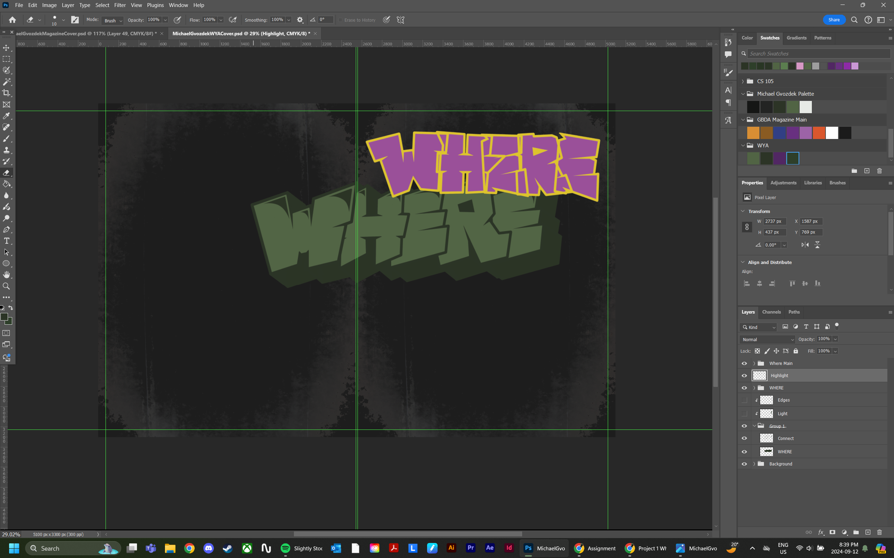
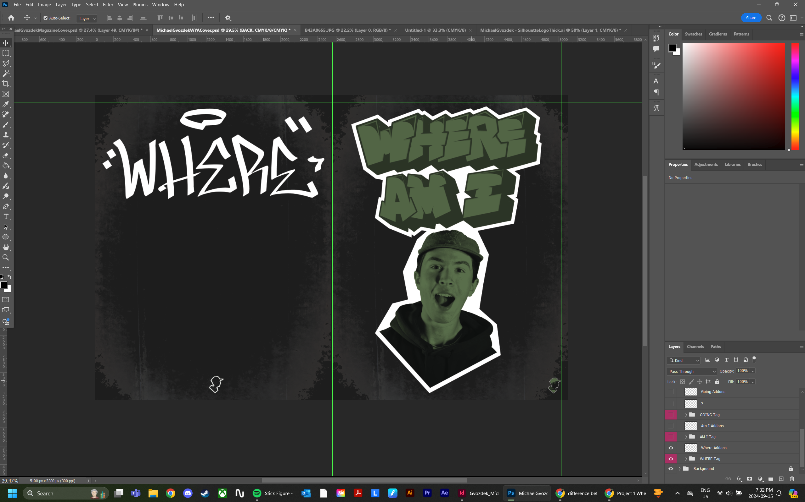
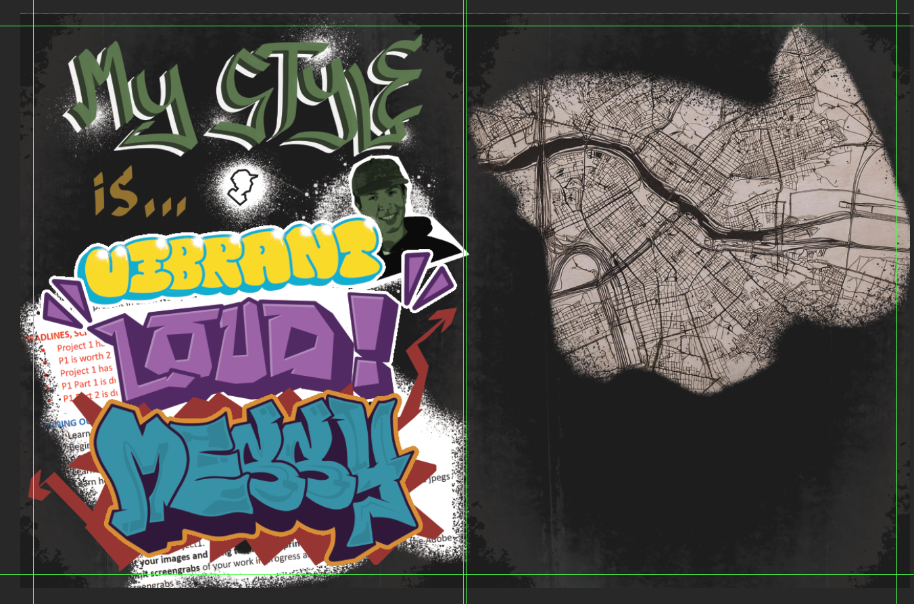

Progress Images:
|  |  |  |
 |
What I Did
My first project in GBDA 202, a second-year design course, was to make a series of posters or a magazine that showcased my journey as a designer. The magazine I decided to make includes information on my personal style, my design goals, and what made me the designer I am today. All of the non-body text was made by me, as well as the logos and illustrations.
Design Decisions
The assignment required me to make all of the assets myself or with AI, so with this in mind I began by taking a picture of my ceiling to use as texture. My ceiling can be seen as the basic background of each page. I decided to use the assignment as an opportunity to practice my illustration skills, so I made the majority of the text myself. Each illustrated word began with a rough sketch, then the outline and finally the fill. Creating the letters in this order allowed me to make sure the structure is properly established before moving too far along. The cover page has a white outline around the letters and my face, this intentionally contrasts the background. By using negative space in between the letters I was able to make sure my viewers eyes were directed to the spots on the cover that I wanted them to be. To make the first spread pop out more I decided that each word would display the adjective it was expressing, for example "MESSY" is purposely made in a messy style. Along with the letters, a few character and logo creations were included. On the last page a side by side comparison of my side profile and my logo is present to try to show my inspiration for the logo.
Made in Photoshop and Indesign.
What I Learned
One of the main takeaways I got from this project was how to use the world around me as assets for my design. In this case I used a picture of my ceiling to create the background texture. This realization opened a new way of deisgn thinking for me and ive began to take more inspiration from my environment for projects.
Michael Gvozdek 2025